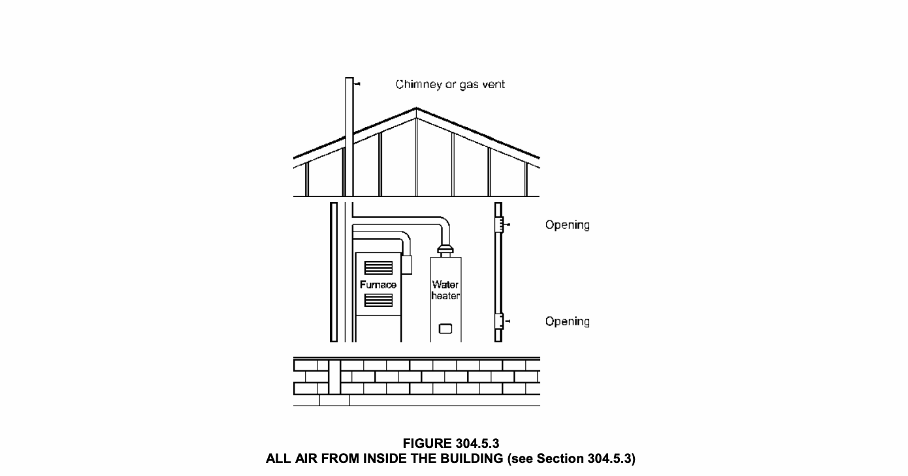
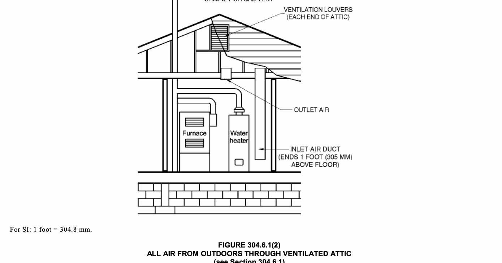
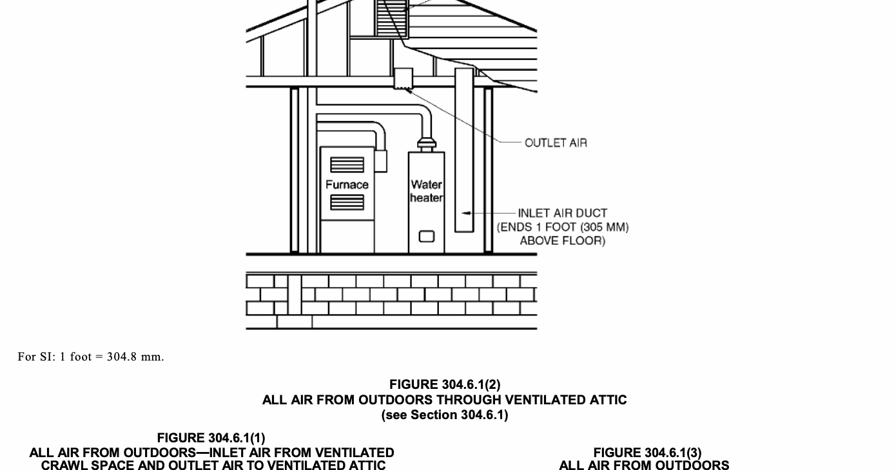
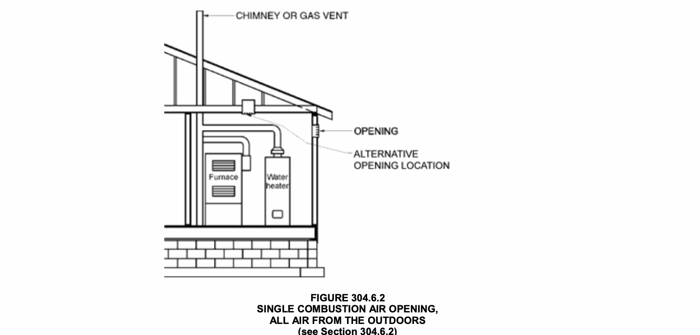
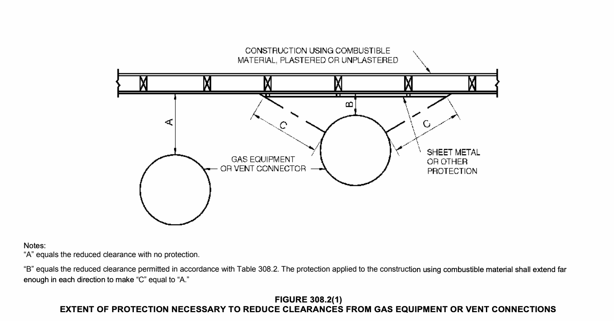
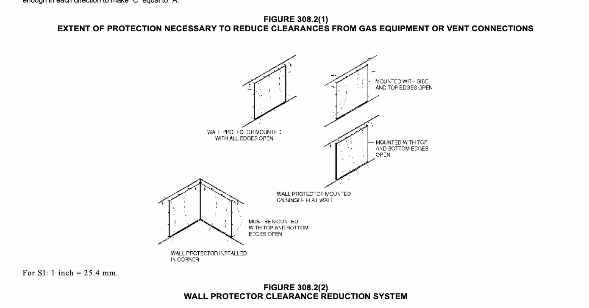
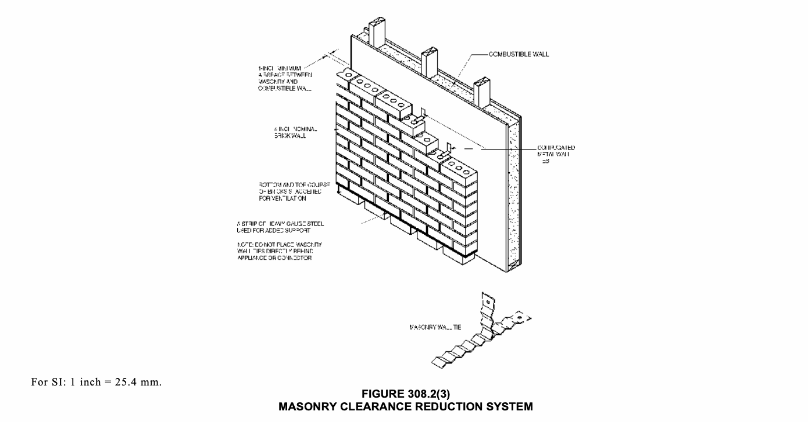

This chapter shall govern the approval and installation of all equipment and appliances that comprise parts of the installations regulated by this code in accordance with Section 101.2.
The requirements for combustion and dilution air for gas-fired appliances shall be governed by Section 304. The requirements for combustion and dilution air for appliances operating with fuels other than fuel gas shall be regulated by the New York City Mechanical Code.
Heating, ventilating and air-conditioning systems of all structures shall be designed and installed for efficient utilization of energy in accordance with the New York City Energy Conservation Code.
Appliances regulated by this code shall be listed and labeled.
Refer to Section 28-113.4 of the Administrative Code and Article 114 of Chapter 1 of Title 28 of the Administrative Code.
A permanent factory-applied nameplate(s) shall be affixed to appliances on which shall appear, in legible lettering, the manufacturer’s name or trademark, the model number, serial number and, for listed appliances, the seal or mark of the testing agency. A label shall also include the hourly rating in British thermal units per hour (Btu/h) (W), the type of fuel approved for use with the appliance; and the minimum clearance requirements.
Potable water supply and building drainage system connections to appliances regulated by this code shall be in accordance with the New York City Plumbing Code.
Appliances shall be designed for use with the type of fuel gas that will be supplied to them.
Appliances shall not be converted to utilize a different fuel gas except where complete instructions for such conversion are provided in installation instructions by the serving gas supplier or by the appliance manufacturer.
Storage or use of LPG for a stationary LPG installation shall comply with the New York City Fire Code.
Where means for isolation of vibration of an appliance is installed, means for support and restraint of that appliance shall be provided as designed by a registered design professional.
Defective material or parts shall be replaced or repaired in such a manner so as to preserve the original approval or listing.
Appliances and supports that are exposed to wind shall be designed and installed to resist the wind pressures determined in accordance with the New York City Building Code.
For structures located in areas of special flood hazard, the appliance, equipment and system installations regulated by this code shall comply with Appendix G of the New York City Building Code.
When earthquake loads are applicable in accordance with the New York City Building Code, the supports shall be designed and installed for the seismic forces in accordance with that code.
All ducts required for the installation of systems regulated by this code shall be designed and installed in accordance with the New York City Mechanical Code.
Buildings or structures and the walls enclosing habitable or occupiable rooms and spaces in which persons live, sleep or work, or in which feed, food or foodstuffs are stored, prepared, processed, served or sold, shall be constructed to protect against rodents in accordance with the New York City Building Code.
The appliances, equipment and systems regulated by this code shall not be located in an elevator shaft.
Hydronic piping, ventilation and other mechanical systems not covered by this code shall be in accordance with the New York City Mechanical Code.
Electrical wiring, controls and connections to equipment and appliances regulated by this code shall be in accordance with the New York City Electrical Code.
Appliances and equipment regulated by this code must comply with Section 928 of the New York City Mechanical Code.
The building shall not be weakened by the installation of any gas piping. In the process of installing or repairing any gas piping, the finished floors, walls, ceilings, tile work or any other part of the building or premises which is required to be changed or replaced shall be left in a safe structural condition in accordance with the requirements of the New York City Building Code.
Penetrations of floor/ceiling assemblies and assemblies required to have a fire-resistance rating shall be protected in accordance with the New York City Building Code.
The cutting, notching and boring of wood members shall comply with Sections 302.3.1 through 302.3.4.
Cuts, notches and holes bored in trusses, structural composite lumber, structural glued-laminated members and I-joists are prohibited except where permitted by the manufacturer’s recommendations or where the effects of such alterations are specifically considered in the design of the member by a registered design professional.
Notching at the ends of joists shall not exceed one-fourth the joist depth. Holes bored in joists shall not be within 2 inches (51 mm) of the top and bottom of the joist and their diameter shall not exceed one-third the depth of the member. Notches in the top or bottom of the joist shall not exceed one-sixth the depth and shall not be located in the middle one-third of the span.
In exterior walls and bearing partitions, any wood stud is permitted to be cut or notched to a depth not exceeding 25 percent of its width. Cutting or notching of studs to a depth not greater than 40 percent of the width of the stud is permitted in nonload-bearing partitions supporting no loads other than the weight of the partition.
A hole not greater in diameter than 40 percent of the stud depth is permitted to be bored in any wood stud. Bored holes not greater than 60 percent of the depth of the stud are permitted in nonload-bearing partitions or in any wall where each bored stud is doubled, provided not more than two such successive doubled studs are so bored. In no case shall the edge of the bored hole be nearer than 5/8 inch (15.9 mm) to the edge of the stud. Bored holes shall not be located at the same section of stud as a cut or notch.
Truss members and components shall not be cut, drilled, notched, spliced or otherwise altered in any way without the written concurrence and approval of a registered design professional. Alterations resulting in the addition of loads to any member (e.g., HVAC equipment, water heaters) shall not be permitted without verification that the truss is capable of supporting such additional loading.
The cutting, notching and boring of holes in structural steel framing members shall be as prescribed by the registered design professional.
Flanges and lips of load-bearing, cold-formed steel framing members shall not be cut or notched. Holes in webs of load-bearing, cold-formed steel framing members shall be permitted along the centerline of the web of the framing member and shall not exceed the dimensional limitations, penetration spacing or minimum hole edge distance as prescribed by a registered design professional. Cutting, notching and boring holes of steel floor/roof decking shall be as pre-scribed by a registered design professional.
Flanges and lips of nonstructural cold-formed steel wall studs shall be permitted along the centerline of the web of the framing member, shall not exceed 11/2 inches (38 mm) in width or 4 inches (102 mm) in length, and the holes shall not be spaced less than 24 inches (610 mm) center to center from another hole or less than 10 inches (254 mm) from the bearing end.
Appliances shall be located as required by this section, specific requirements elsewhere in this code and the conditions of the equipment and appliance listing.
Appliances shall not be located in a hazardous location unless listed and approved for the specific installation.
Appliances shall not be located in sleeping rooms, bathrooms, toilet rooms, storage closets or surgical rooms, or in a space that opens only into such rooms or spaces.
Exceptions:
1. In rooms other than those used for sleeping purposes, direct-vent appliances that obtain all combustion air directly from the outdoors and installed in accordance with the conditions of the listing and the manufacturer’s instructions.
2. In rooms other than those used for sleeping purposes, vented room heaters, wall furnaces, vented decorative appliances, vented gas fireplaces, vented gas fireplace heaters and decorative appliances for installation in vented solid fuel-burning fireplaces that are installed in rooms that meet the required volume criteria of Section 304.5.
3. In rooms other than those used for sleeping purposes, appliances installed in an enclosure in which all combustion air is taken from the outdoors, in accordance with Section 304.6. Access to such enclosure shall be through a solid weather-stripped door, equipped with an approved self-closing device.
Gas-fired direct vent space-heating appliances used for providing heat in rooms for sleeping purposes shall be deemed to be located outside of the sleeping room provided that such a unit is factory assembled and manufactured with an integral factory assembled carbon monoxide detector interlock with automatic main gas shut-off valve. Such unit shall be of direct vent type, such that all air for combustion is derived from the outdoors and that all flue gases are discharged directly to the outdoors. All gas piping shall be hard-piped with no flexible connectors. Such unit shall be installed through a sleeve located in an exterior wall. Pursuant to Section 27-2034(f) of the New York City Housing Maintenance Code, each heater shall be equipped with an effective device which will automatically shut off the gas supply to the heater if its pilot light or other constantly burning flame is extinguished, or in the event of an interruption of the gas supply to the heater, and will not permit the heater to be relighted unless such shut-off device is first reset manually. Installation requirements shall be in accordance with the manufacturer’s instructions and the applicable listing.
Appliances shall not be installed in a location where subject to physical damage, including vehicular impact, unless protected by approved barriers meeting the requirements of the New York City Fire Code.
Furnaces and boilers installed in closets and alcoves shall be listed for such installation.
Gas-fired appliances, regardless of btu per hour input, shall be located in an enclosure in accordance with Section 509 of the New York City Building Code.
Exception: Gas-fired direct vented appliances with a 350,000 btu per hour input or less may be installed in a nonfire rated enclosure.
Maximum indoor temperature in spaces surrounding appliances shall not exceed the operational temperature of the installed equipment and/or 104° F (40° C).
Appliances installed in outdoor locations shall be either listed for outdoor installation or provided with protection from outdoor environmental factors that influence the operability, durability and safety of the appliances.
Appliances installed in pits or excavations shall not come in direct contact with the surrounding soil. The sides of the pit or excavation shall be held back a minimum of 12 inches (305 mm) from the appliance. Where the depth exceeds 12 inches (305 mm) below adjoining grade, the walls of the pit or excavation shall be lined with concrete or masonry, such concrete or masonry shall extend a minimum of 4 inches (102 mm) above adjoining grade and shall have sufficient lateral load-bearing capacity to resist collapse. The appliance shall be protected from flooding in a manner approved by the commissioner.
Air for combustion, ventilation and dilution of flue gases for appliances installed in buildings shall be provided by application of one of the methods prescribed in Sections 304.5 through 304.9. Where the requirements of Section 304.5 are not met, outdoor air shall be introduced in accordance with one of the methods prescribed in Sections 304.6 through 304.9. Direct-vent appliances, gas appliances of other than natural draft design and vented gas appliances other than Category I shall be provided with com-bustion, ventilation and dilution air in accordance with the appliance manufacturer’s instructions. Combustion, ventilation, and dilution air shall be obtained solely from the outdoors for fuel-burning appliances with an input greater than 350,000 Btu/h.
Exception: Type 1 clothes dryers that are provided with makeup air in accordance with Section 614.5.
For the purposes of this chapter, an opening to a naturally ventilated crawl space or attic space shall be considered equivalent to an opening to the outdoors.
Where lower combustion air openings connect with crawl spaces, such spaces shall have unobstructed openings to the outdoors at least twice that required for the combustion air openings. The height of the crawl space shall co mply with the requirements of the New York City Building Code and shall be without obstruction to the free flow of air.
Where combustion air is obtained from an attic area, the attic ventilating openings shall not be subject to ice or snow blockage, and the attic shall have not less than 30 inches (762 mm) vertical clear height at its maximum point. Attic ventilation openings shall be sufficient to provide the required volume of combustion air and the attic ventilation required by the New York City Building Code. The combustion air openings shall be provided with a sleeve of not less than 0.019 inch (0.48 mm) (No. 26 Gage) galvanized steel or other approved material extending from the appliance enclosure to at least 6 inches (152 mm ) above the top of the ceiling joists and insulation.
Appliances shall be located so as not to interfere with proper circulation of combustion, ventilation and dilution air.
Where used, a draft hood or a barometric draft regulator shall be installed in the same room or enclosure as the equipment served so as to prevent any difference in pressure between the hood or regulator and the combustion air supply. A barometric damper may be installed in an adjacent room provided that a louver is installed in the adjacent room to the outside air. The net free area of the louver shall be equal to or greater than the area of the barometric damper.
The equipment and appliances within every room containing fuel-burning appliances shall be installed so as to allow free circulation of air. Provisions shall be made to allow for the simultaneous operation of mechanical exhaust systems, fireplaces or other equipment and appliances operating in the same room or space from which combustion, ventilation, and dilution air is being drawn. Such provisions shall prevent the operation of such appliances, equipment and systems from affecting the supply of combustion, ventilation, and dilution air.
Where exhaust fans are installed, makeup air shall be provided to replace the exhausted air. Calculations shall be provided on the construction documents to validate the use of the exhaust fan(s) and compliance with this Chapter.
Where ventilation air is brought in by mechanical means for heat generation mitigation, provisions must be made for proper air balance to prevent a negative or positive pressure in the boiler room and to discharge the ventilation directly to the outside.
Openings and ducts shall not connect appliance enclosures with a space in which the operation of a fan will adversely affect the flow of the combustion, ventilation, and dilution air. Combustion, ventilation, and dilution air shall not be subject to ice or snow blockage. No combustion, ventilation, and dilution air inlet shall be less than 30 inches (762 mm) above grade. Combustion, ventilation, and dilution air shall not be obtained from a hazardous location, except where the fuel-fired appliances are located within the hazardous location and are not installed in accordance with this code. Combustion, ventilation, and dilution air shall not be taken from a refrigeration machinery room, except where a refrigerant vapor detector system is installed to automatically shut off the combustion process in the event of refrigerant leakage. For structures in areas of special flood hazard, air shall be obtained from a location complying with Appendix G of the New York City Building Code.
The required volume of indoor air shall be determined in accordance with Section 304.5.1 or 304.5.2, except that where the air infiltration rate is known to be less than 0.40 air changes per hour (ACH), Section 304.5.2 shall be used. The total required volume shall be the sum of the required volume calculated for all appliances located within the space. Rooms communicating directly with the space in which the appliances are installed through openings not furnished with doors, and through combustion air openings sized and located in accordance with Section 304.5.3, are considered to be part of the required volume.
Exception: Combustion, ventilation, and dilution air shall be obtained solely from the outdoors for fuel-burning appliances with an input greater than 350,000 Btu/h.
The minimum required volume shall be 50 cubic feet per 1,000 Btu/h (4.8m3/kW) of the appliance input rating.
Where the air infiltration rate of a structure is known, the minimum required volume shall be determined as follows: For appliances other than fan-assisted, calculate volume using Equation 3-1.
For fan-assisted appliances, calculate volume using Equation 3-2.
Required Volumefan > 15ft3 {(Ifan)/ (1,000 Btu/hr)} ACH
(Equation 3-2)
where: Iother = All appliances other than fan assisted (input in Btu/h).
Ifan = Fan-assisted appliance (input in Btu/h).
ACH = Air change per hour (percent of volume of space exchanged per hour, expressed as a decimal). For purposes of this calculation, an infiltration rate greater than 0.60 ACH shall not be used in Equations 3-1 and 3-2.
Openings used to connect indoor spaces shall be sized and located in accordance with Sections 304.5.3.1 and 304.5.3.2 (see Figure 304.5.3). ALL AIR FROM INSIDE THE BUILDING (see Section 304.5.3)

Each opening shall have a minimum free area of 1 square inch per 1,000 Btu/h (2200 mm2/kW) of the total input rating of all appliances in the space, but not less than 100 square inches (0.06 m2). One opening shall commence within 12 inches (305 mm) of the top and one opening shall commence within 12 inches (305 mm) of the bottom of the enclosure. The minimum dimension of air openings shall be not less than 3 inches (76 mm).
The volumes of spaces in different stories shall be considered as communicating spaces where such spaces are connected by one or more openings in doors or floors having a total minimum free area of 2 square inches per 1,000 Btu/h (4402 mm2/kW) of total input rating of all appliances.
Outdoor combustion air shall be provided through opening(s) to the outdoors in accordance with Section 304.6.1 or 304.6.2. The minimum dimension of air openings shall be not less than 3 inches (76 mm). The size of the openings connecting the room to the outdoor air supply shall also comply with any applicable rules of the New York City Department of Environmental Protection.
Two permanent openings, one commencing within 12 inches (305 mm) of the top and one commencing within 12 inches (305 mm) of the bottom of the enclosure, shall be provided. The openings shall communicate directly, or by ducts, with the outdoors or spaces that freely communicate with the outdoors. Where directly communicating with the outdoors, or where communicating with the outdoors through vertical ducts, each opening shall have a minimum free area of 1 square inch per 4,000 Btu/h (550 mm2/kW) of total input rating of all appliances in the enclosure (see Figures 304.6.1(1) and 304.6.1(2)). Where communicating with the outdoors through horizontal ducts, each opening shall have a minimum free area of not less than 1 square inch per 2,000 Btu/h (1100 mm2/kW) of total input rating of all appliances in the enclosure (see Figure 304.6.1(3)).
For SI: 1 foot = 304.8 mm.
(see Section 304.6.1)
(see Section 304.6.1) (see Section 304.6.1) (see Section 304.6.2)


One permanent opening, commencing within 12 inches (305 mm) of the top of the enclosure, shall be provided. The appliance shall have clearances of at least 1 inch (25 mm) from the sides and back and 6 inches (152 mm) from the front of the appliance. The opening shall directly communicate with the outdoors or through a vertical or horizontal duct to the outdoors or spaces that freely communicate with the outdoors (see Figure 3 04.6.2) and shall have a minimum free area of 1 square inch per 3,000 Btu/h (734 mm2/kW) of the total input rating of all appliances located in the enclosure, and not less than the sum of the areas of all vent connectors in the space.

The use of a combination of indoor and outdoor combustion air shall be in accordance with Sections 304.7.1 through 304.7.3.
Where used, openings connecting the interior spaces shall comply with Section 304.5.3.
Outdoor opening(s) shall be located in accordance with Section 304.6.
The outdoor opening(s) size shall be calculated in accordance with the following:
1. The ratio of interior spaces shall be the available volume of all communicating spaces divided by the required volume.
2. The outdoor size reduction factor shall be one minus the ratio of interior spaces.
3. The minimum size of outdoor opening(s) shall be the full size of outdoor opening(s) calculated in accordance with Section 304.6, multiplied by the reduction factor. The minimum dimension of air openings shall be not less than 3 inches (76 mm).
Where all combustion air is provided by a mechanical air supply system, the combustion air shall be supplied from the outdoors at a rate not less than 0.35 cubic feet per minute per 1,000 Btu/h (0.034 m3/min per kW) of total input rating of all appliances located within the space. Combustion air rates shall also comply with any applicable rules of the New York City Department of Environmental Protection. The mechanical air supply shall be sufficient to accommodate combustion air, ventilation air, and dilution air requirements of the installation.
Where exhaust fans are installed, makeup air shall be provided to replace the exhausted air.
Each of the appliances served shall be interlocked with the mechanical air supply system to prevent main burner operation when the mechanical air supply system is not in operation. The air flow and the damper operation shall be proven prior to burner operation.
The required size of openings for combustion, ventilation, and dilution air shall be based on the net free area of each opening. The net free area of an opening shall be that specified by the manufacturer of the opening covering. In the absence of such information, openings covered with metal louvers shall be deemed to have a net free area of 60 percent of the area of the opening, and openings covered with wood louvers shall be deemed to have a net free area of 10 percent of the area of the opening. Louvers and grilles shall be fixed in the open position.
Exception: Operable louvers shall be interlocked with the appliance so that they are proven to be in the full open position prior to main burner ignition and during main burner operation. Means shall be provided to prevent the main burner from igniting if the louvers fail to open during burner startup and to shut down the main burner if the louvers close during operation.
Where the combustion air openings are provided with automatic, smoke or fire dampers, the dampers shall be electrically interlocked with the appliances served, so as to prevent operation of any appliance when any of the dampers are closed. Manually operated dampers shall not be installed in combustion air openings. The damper opening shall be proven prior to burner operation.
A sign stating, “Louvers, dampers and/or ventilation openings must not be blocked or disabled.” shall be permanently affixed, in clear view, adjacent to the opening(s) within the room containing the equipment. The letters used on the sign shall be at least 1-inch (25 mm) in height.
Combustion air openings to the outdoors shall comply with the location and protection provisions applicable to outside air intake openings of Sections 401.5 and 401.6 of the New York City Mechanical Code.
Combustion air ducts shall comply with all of the following:
1. Be of galvanized steel complying with Chapter 6 of the New York City Mechanical Code or of equivalent corrosion-resistant material approved for this application.
Exception: Within dwelling units, unobstructed stud and joist spaces shall not be prohibited from conveying combustion air, provided that not more than one required fireblock is removed.
2. Have a minimum cross-sectional dimension of 3 inches (76 mm).
3. Terminate in an unobstructed space allowing free movement of combustion air to the appliances.
4. Have the same cross-sectional areas as the free area of the openings to which they connect.
5. Serve a single appliance enclosure.
6. Not serve both upper and lower combustion air openings where both such openings are used. The separation between ducts serving upper and lower combustion air openings shall be maintained to the source of combustion air.
7. Not be screened where terminating in an attic space.
8. Not slope downward toward the source of combustion air, where serving the upper required combustion air opening.
9. Be constructed so that the remaining space surrounding a chimney or chimney liner, installed within a masonry, metal or factory-built chimney cannot be used to supply combustion, ventilation and dilution air, except for direct vent appliances designed and installed in accordance with the equipment manufacturer’s instructions and listing.
Where corrosive or flammable process fumes or gases, other than products of combustion, are present, means for the disposal of such fumes or gases shall be provided. Such fumes or gases include carbon monoxide, hydrogen sulfide, ammonia, chlorine and halogenated hydrocarbons. In barbershops, beauty shops and other facilities where chemicals that generate corrosive or flammable products, such as aerosol sprays, are routinely used, nondirect-vent-type appliances shall be located in a mechanical room separated or partitioned off from other areas with provisions for combustion air and dilution air from the outdoors. Direct-vent appliances shall be installed in accordance with the appliance manufacturer’s installation instructions.
Equipment and appliances shall be installed as required by the terms of their approval, in accordance with the conditions of listing, the manufacturer’s instructions and this code. Manufacturers’ installation instructions shall be available on the job site at the time of inspection. Where a code provision is less restrictive than the conditions of the listing of the equipment or appliance or the manufacturer’s installation instructions, the conditions of the listing and the manufacturer’s installation instructions shall apply.
Equipment and appliances having an ignition source shall not be installed in Group H occupancies or control areas where open use, handling or dispensing of combustible, flammable or explosive materials occurs.
Equipment and appliances having an ignition source shall be elevated such that the source of ignition is not less than 18 inches (457 mm) above the floor in hazardous locations and public garages, private garages, repair garages, motor fuel-dispensing facilities and parking garages. For the purpose of this section, rooms or spaces that are not part of the living space of a dwelling unit and that communicate directly with a private garage through openings shall be considered to be part of the private garage.
Exception: Elevation of the ignition source is not required for appliances that are listed as flammable vapor ignition resistant.
In residential garages where appliances are installed in a separate, enclosed space having access only from outside of the garage, such appliances shall be permitted to be installed at floor level, provided that the required combustion air is taken from the exterior of the garage.
Connection of a parking garage with any room in which there is a fuel-fired appliance shall be by means of a vestibule providing a two-doorway separation, except that a single door is permitted where the sources of ignition in the appliance are elevated in accordance with Section 305.3.
Exception: This section shall not apply to appliance installations complying with Section 305.4.
Appliances located in public garages, motor fuel-dispensing facilities, repair garages or other areas frequented by motor vehicles shall be installed a minimum of 8 feet (2438 mm) above the floor. Where motor vehicles are capable of passing under an appliance, the appliance shall be installed at the clearances required by the appliance manufacturer and not less than 1 foot (305 mm) higher than the tallest vehicle garage door opening.
Exceptions:
1. The requirements of this section shall not apply where the appliances are protected from motor vehicle impact and installed in accordance with Section 305.3 of this code and NFPA 30A.
2. Appliances installed in repair garages shall be separated from repair areas by walls or partitions, floors, or floor ceiling assemblies that are constructed so as to prohibit the transmission of vapors and having a fire-resistance rating of not less than 1 hour, and that have no openings in the wall separating the repair area within 8 feet (2438 mm) of the floor. Wall penetration shall be firestopped. Air for combustion purposes shall be obtained from the outdoors. The heating room shall not be used for the storage of combustible materials.
3. Heating appliances for vehicle repair areas where there is no dispensing or transferring of Class I or Class II flammable or combustible liquids or liquefied petroleum gas shall be installed in accordance with NFPA 30A.
Appliances located in private garages shall be installed with a minimum clearance of 6 feet (1829 mm) above the floor.
Exception: The requirements of this section shall not apply where the appliances are protected from motor vehicle impact and installed in accordance with Section 305.3.
Boiler rooms and furnace rooms shall be protected as required by the New York City Building Code.
Appliances installed at grade level shall be supported on a level concrete slab or other approved material extending not less than 3 inches (76 mm) above adjoining grade or shall be suspended not less than 6 inches (152 mm) above adjoining grade. Such supports shall be installed in accordance with the manufacturer’s installation instructions.
Heat-producing equipment and appliances shall be installed to maintain the required clearances to combustible construction as specified in the listing and manufacturer’s instructions. Such clearances shall be reduced only in accordance with Section 308. Clearances to combustibles shall include such considerations as door swing, drawer pull, overhead projections or shelving and window swing. Devices, such as door stops or limits and closers, shall not be used to provide the required clearances.
Appliances installed in enclosed, basement and underground parking structures shall be installed in accordance with NFPA 88A.
Appliances installed in repair garages shall be installed in a detached building or room, separated from repair areas by walls or partitions, floors or floor-ceiling assemblies that are constructed so as to prohibit the transmission of vapors and having a fire-resistance rating of not less than 1 hour, and that have no openings in the wall separating the repair area within 8 feet (2438 mm) of the floor. Wall penetrations shall be firestopped. Air for combustion purposes shall be obtained from the outdoors. The appliance room shall not be used for the storage of combustible materials.
Exceptions:
1. Overhead heaters where installed not less than 8 feet (2438 mm) above the floor shall be permitted.
2. Heating appliances for vehicle repair areas where there is no dispensing or transferring of Class I or II flammable or combustible liquids or liquefied petroleum gas shall be installed in accordance with NFPA 30A.
Heaters in aircraft hangars shall be installed in accordance with NFPA 409.
Appliances shall be supported and connected to the piping so as not to exert undue strain on the connections.
Appliances shall be accessible for inspection, service, repair and replacement without disabling the function of a fire-resistance-rated assembly or removing permanent construction, other appliances, or any other piping or ducts not connected to the appliance being inspected, serviced, repaired or replaced. A level working space at least 30 inches deep and 30 inches wide (762 mm by 762 mm) shall be provided in front of the control side to service an appliance.
Rooms containing appliances shall be provided with a door and an unobstructed passageway measuring not less than 36 inches (914 mm) wide and 80 inches (2032 mm) high.
Exception: Within a dwelling unit, appliances installed in a compartment, alcove, basement or similar space shall be provided with access by an opening or door and an unobstructed passageway measuring not less than 24 inches (610 mm) wide and large enough to allow removal of the largest appliance in the space, provided that a level service space of not less than 30 inches (762 mm) deep and the height of the appliance, but not less than 30 inches (762mm), is present at the front or service side of the appliance with the door open.
Attics containing appliances shall be provided with an opening and unobstructed passageway large enough to allow removal of the largest appliance. The passageway shall not be less than 30 inches (762 mm) high and 22 inches (559 mm) wide and not more than 20 feet (6096 mm) in length when measured along the centerline of the passageway from the opening to the appliance. The passageway shall have continuous solid flooring not less than 24 inches (610 mm) wide. A level service space not less than 30 inches (762 mm) deep and 30 inches (762 mm) wide shall be present at the front or service side of the appliance. The clear access opening dimensions shall be a minimum of 20 inches by 30 inches (508 mm by 762 mm), and large enough to allow removal of the largest component of the appliance.
Exceptions:
1. The passageway and level service space are not required where the appliance is capable of being serviced and removed through the required opening.
2. Where the passageway is not less than 6 feet (1829 mm) high for its entire length, the passageway shall be not greater than 50 feet (15 250 mm) in length.
A luminaire controlled by a switch located at the required passageway opening and a receptacle outlet shall be provided at or near the appliance location in accordance with the New York City Electrical Code.
Under-floor spaces containing appliances shall be provided with an access opening and unobstructed passageway large enough to remove the largest component of the appliance. The passageway shall not be less than 30 inches (762 mm) high and 22 inches (559 mm) wide, nor more than 20 feet (6096 mm) in length when measured along the centerline of the passageway from the opening to the appliance. A level service space not less than 30 inches (762 mm) deep and 30 inches (762 mm) wide shall be present at the front or service side of the appliance. If the depth of the passageway or the service space exceeds 12 inches (305 mm) below the adjoining grade, the walls of the passageway shall be lined with concrete or masonry extending 4 inches (102 mm) above the adjoining grade and having sufficient lateral-bearing capacity to resist collapse. The clear access opening dimensions shall be a minimum of 22 inches by 30 inches (559 mm by 762 mm), and large enough to allow removal of the largest appliance.
Exceptions:
1. The passageway is not required where the level service space is present when the access is open and the appliance is capable of being serviced and removed through the required opening.
2. Where the passageway is unobstructed and not less than 6 feet (1829 mm) high and 22 inches (559 mm) wide for its entire length, the passageway shall not be limited in length.
A luminaire controlled by a switch located at the required passageway opening and a receptacle outlet shall be provided at or near the appliance location in accordance with the New York City Electrical Code.
Where equipment and appliances requiring access are installed on roofs or elevated structures at a height exceeding 16 feet (4877 mm), such access shall be provided by a permanent approved means of access, the extent of which shall be from grade or floor level to the equipment and appliances’ level service space. Such access shall not require climbing over obstructions greater than 30 inches (762 mm) high or walking on roofs having a slope greater than 4 units vertical in 12 units horizontal (33-percent slope). Where access involves climbing over parapet walls, the height shall be measured to the top of the parapet wall. Permanent ladders installed to provide the required access shall comply with the following minimum design criteria.
1. The side railing shall extend above the parapet or roof edge not less than 30 inches (762 mm).
2. Ladders shall have rung spacing not to exceed 12 inches (305 mm) on center.
3. Ladders shall have a toe spacing not less than 7 inches (178 mm) deep.
4. There shall be a minimum of 18 inches (457 mm) between rails.
5. Rungs shall have a minimum diameter of 0.75-inch (19 mm) and shall be capable of withstanding a 300-pound (136.1 kg) load.
6. Where a cage, well or ladder safety device is provided, ladders over 20 feet (6096 mm) in height shall be provided with landing platforms for each 30 feet (9144 mm) of height. Where a cage, well or ladder safety device is not provided, ladders over 20 feet (6096 mm) in height shall be provided with landing platforms for each 20 feet (6096 mm) in height. Landings shall be capable of withstanding a load of 100 pounds per square foot (488.2 kg/m2). Landing dimensions shall be not less than 30 inches (762 mm) and not less than 24 inches (610 mm) in width. A guardrail and toeboard shall be provided on all open sides of the landing.
7. Where ladder extensions are installed the side rails of through or side-step ladder extensions shall extend 3½ feet (305 mm) above the parapets and landings. For through ladder extensions, the rungs shall be omitted from the extensions and shall have not less than 18 inches (457 mm) nor more than 24 inches (610 mm) of clearance between rails. For side-step or offset fixed ladder sections, at landings, the side rails and rungs shall be carried to the next regular rung beyond or above the 3½ (305 mm) feet minimum.
8. Ladders shall be protected against corrosion by approved means.
9. Catwalks installed to provide the required access shall be not less than 24 inches wide (610 mm) and shall have railings as required for service platforms.
Exception: This section shall not apply to Group R-3 occupancies.
Where appliances, equipment, fans or other components that require service are installed on a roof having a slope of 3 units vertical in 12 units horizontal (25-percent slope) or greater and having an edge more than 30 inches (762 mm) above grade at such edge, a level platform shall be provided on each side of the appliance or equipment to which access is required for service, repair or maintenance. The platform shall be not less than 30 inches (762 mm) in any dimension and shall be provided with guards. The guards shall extend not less than 42 inches (1067 mm) above the platform, shall be constructed so as to prevent the passage of a 21-inch-diameter (533 mm) sphere and shall comply with the loading requirements for guards specified in the New York City Building Code. Access shall not require walking on roofs having a slope greater than 4 units vertical in 12 units horizontal (33-percent slope). Where access involves obstructions greater than 30 inches (762 mm) in height, such obstructions shall be provided with ladders installed in accordance with Section 306.5 or stairs installed in accordance with the requirements specified in the New York City Building Code in the path of travel to and from appliances, fans or equipment requiring service.
A receptacle outlet shall be provided at or near the appliance location in accordance with the New York City Electrical Code.
Guards shall be provided where appliances, equipment or other components that require service and roof hatch openings are located within 10 feet (3048 mm) of a roof edge or open side of a walking surface and such edge or open side is located more than 30 inches (762 mm) above the floor, roof or grade below. The guard shall extend not less than 30 inches (762 mm) beyond each end of such appliances, fans or other components and roof hatch openings and the top of the guard shall be located not less than 42 inches (1067 mm) above the elevated surface adjacent to the guard. The guard shall be constructed so as to prevent the passage of a 21-inch-diameter (533 mm) sphere and shall comply with the loading requirements for guards specified in the New York City Building Code.
Equipment and appliances installed on rooftops of buildings shall be installed in accordance with the requirements of the New York City Fire Code regarding rooftop access and obstructions, and shall not obstruct or interfere with firefighting operations or the operation of any doors, windows, fire escapes, or other means of egress or other building components requiring operation or access.
Condensate drainage systems shall be provided for equipment and appliances containing evaporators and cooling coils in accordance with the New York City Mechanical Code.
Liquid combustion by-products of condensing appliances shall be collected and discharged to an approved plumbing fixture, or disposal area in accordance with the manufacturer’s installation instructions. Condensate piping shall be of approved corrosion-resistant material and shall not be smaller than the drain connection on the appliance. Such piping shall maintain a minimum horizontal slope in the direction of discharge of not less than one-eighth unit vertical in 12 units horizontal (1-percent slope).
Condensate from all fuel-burning appliances and associated flues shall be neutralized to a pH of at least 6 and no more than 8 prior to disposal to a sanitary system.
Components of the condensate disposal system shall be cast iron, galvanized steel, copper, cross-linked polyethylene, polybutylene, polyethylene, ABS, CPVC or PVC pipe or tubing. All components shall be selected for the pressure and temperature rating of the installation. Joints and connections shall be made in accordance with the applicable provisions of Chapter 7 of the New York City Plumbing Code relative to the material type. Condensate waste and drain line size shall be not less than 3/4-inch (19 mm) internal diameter and shall not decrease in size from the drain pan connection to the place of condensate disposal. Where the drain pipes from more than one unit are manifolded together for condensate drainage, the pipe or tubing shall be sized by a registered design professional.
Condensate drains shall be trapped as required by the equipment or appliance manufacturer.
Category IV condensing appliances shall be provided with an auxiliary drain pan where damage to any building component will occur as a result of stoppage in the condensate drainage system. Such pan shall be installed in accordance with the applicable provisions of Section 307 of the New York City Mechanical Code.
Exception: An auxiliary drain pan shall not be required for appliances that automatically shut down operation in the event of a stoppage in the condensate drainage system.
This section shall govern the reduction in required clearances to combustible materials and combustible assemblies for chimneys, vents, appliances, devices and equipment. Clearance requirements for air-conditioning equipment and central heating boilers and furnaces shall comply with Sections 308.3 and 308.4.
The allowable clearance reduction shall be based on one of the methods specified in Table 308.2 or shall utilize an assembly listed for such application. Where required clearances are not listed in Table 308.2, the reduced clearances shall be determined by linear interpolation between the distances listed in the table. Reduced clearances shall not be derived by extrapolation below the range of the table. The reduction of the required clearances to combustibles for listed and labeled appliances and equipment shall be in accordance with the requirements of this section except that such clearances shall not be reduced where reduction is specifically prohibited by the terms of the appliance or equipment listing [see Figures 308.2(1) through 308.2(3)].
Notes: “A” equals the reduced clearance with no protection.
“B” equals the reduced clearance permitted in accordance with Table 308.2. The protection applied to the construction using combustible material shall extend far enough in each direction to make “C” equal to “A.”
For SI: 1 inch = 25.4 mm.
For SI: 1 inch = 25.4 mm.
| TYPE OF PROTECTION APPLIED TO AND COVERING ALL SURFACES OF COMBUSTIBLE MATERIAL WITHIN THE DISTANCE SPECIFIED AS THE REQUIRED CLEARANCE WITH NO PROTECTION [see Figures 308.2(1), 308.2(2), and 308.2(3)] | WHERE THE REQUIRED CLEARANCE WITH NO PROTECTION FROM APPLIANCE, VENT CONNECTOR, OR SINGLE-WALL METAL PIPE IS: (inches) | |||||||||
|---|---|---|---|---|---|---|---|---|---|---|
| 36 | 18 | 12 | 9 | 6 | ||||||
| Allowable clearances with specified protection (inches) | ||||||||||
| Use Column 1 for clearances above appliance or horizontal connector. Use Column 2 for clearances from appliance, vertical connector, and single-wall metal pipe. | ||||||||||
| Above Col. 1 | Sides and rear Col. 2 | Above Col. 1 | Sides and rear Col. 2 | Above Col. 1 | Sides and rear Col. 2 | Above Col. 1 | Sides and rear Col. 2 | Above Col. 1 | Sides and rear Col. 2 | |
| 1. 3½-inch-thick masonry wall without ventilated air- space | — | 24 | — | 12 | — | 9 | — | 6 | — | 5 |
| 2. ½-inch insulation board over 1-inch glass fiber or min- eral wool batts | 24 | 18 | 12 | 9 | 9 | 6 | 6 | 5 | 4 | 3 |
| 3. 0.0296 (No. 22 gauge) galvanized sheet metal over 1-inch glass fiber or mineral wool batts reinforced with wire on rear face with ventilated airspace | 18 | 12 | 9 | 6 | 6 | 4 | 5 | 3 | 3 | 3 |
| 4. 3½-inch-thick masonry wall with ventilated airspace | — | 12 | — | 6 | — | 6 | — | 6 | — | 6 |
| 5. 0.024-inch (nominal 24 gage) sheet metal with ventilated airspace | 18 | 12 | 9 | 6 | 6 | 4 | 5 | 3 | 3 | 3 |
| 6. ½-inch thick insulation board with ventilated airspace | 18 | 12 | 9 | 6 | 6 | 4 | 5 | 3 | 3 | 3 |
| 7. 0.024-inch (nominal 24 gage) sheet metal with ventilated airspace over 0.024-inch (nominal 24 gage) sheet metal with ventilated airspace | 18 | 12 | 9 | 6 | 6 | 4 | 5 | 3 | 3 | 3 |
| 8. 1-inch glass fiber or mineral wool batts sandwiched between two sheets 0.024-inch (nominal 24 gage) sheet metal with ventilated airspace | 18 | 12 | 9 | 6 | 6 | 4 | 5 | 3 | 3 | 3 |
For SI: 1 inch = 25.4 mm, °C = [(°F - 32)/1.8], 1 pound per cubic foot = 16.02 kg/m3, 1 Btu per inch per square foot per hour per °F = 0.144 W/m2 K.
a. Reduction of clearances from combustible materials shall not interfere with combustion air, draft hood clearance and relief, and accessibility of servicing. b.All clearances shall be measured from the outer surface of the combustible material to the nearest point on the surface of the appliance, disregarding any intervening protection applied to the combustible material.
c. Spacers and ties shall be of noncombustible material. No spacer or tie shall be used directly opposite an appliance or connector. d.For all clearance reduction systems using a ventilated airspace, adequate provision for air circulation shall be provided as described [see Figures 308.2(2) and 308.2(3)].
e. There shall be at least 1 inch between clearance reduction systems and combustible walls and ceilings for reduction systems using ventilated airspace.
f. Where a wall protector is mounted on a single flat wall away from corners, it shall have a minimum 1-inch air gap. To provide air circulation, the bottom and top edges, or only the side and top edges, or all edges shall be left open.
g. Mineral wool batts (blanket or board) shall have a minimum density of 8 pounds per cubic foot and a minimum melting point of 1500°F. h.Insulation material used as part of a clearance reduction system shall have a thermal conductivity of 1.0 Btu per inch per square foot per hour per °F or less.
i. There shall be at least 1 inch between the appliance and the protector. In no case shall the clearance between the appliance and the combustible surface be reduced below that allowed in this table.
j. All clearances and thicknesses are minimum; larger clearances and thicknesses are acceptable. k.Listed single-wall connectors shall be installed in accordance with the terms of their listing and the manufacturer’s installation instructions.



Clearance requirements for indoor air-conditioning equipment shall comply with Sections 308.3.1 through 308.3.5.
Air-conditioning appliances installed in rooms that are large in comparison with the size of the appliance shall be installed with clearances in accordance with the terms of their listing and the manufacturer’s instructions.
Air-conditioning appliances installed in rooms that are not large in comparison with the size of the appliance, such as alcoves and closets, shall be listed for such installations and installed in accordance with the manufacturer’s instructions. Listed clearances shall not be reduced by the protection methods described in Table 308.2, regardless of whether the enclosure is of combustible or noncombustible material.
Air-conditioning appliances installed in rooms that are large in comparison with the size of the appliance shall be permitted to be installed with reduced clearances to combustible material provided the combustible material or appliance is protected as described in Table 308.2.
Where the furnace plenum is adjacent to plaster on metal lath or noncombustible material attached to combustible material, the clearance shall be measured to the surface of the plaster or other noncombustible finish where the clearance specified is 2 inches (51 mm) or less.
Air-conditioning appliances shall have the clearance from supply ducts within 3 feet (914 mm) of the furnace plenum be not less than that specified from the furnace plenum. Clearance is not necessary beyond this distance.
Clearance requirements for central-heating boilers and furnaces shall comply with Sections 308.4.1 through 308.4.6. The clearance to these appliances shall not interfere with combustion air, draft hood clearance and relief, and accessibility for servicing.
Central-heating furnaces and low-pressure boilers installed in rooms large in comparison with the size of the appliance shall be installed with clearances in accordance with the terms of their listing and the manufacturer’s instructions.
Central-heating furnaces and low-pressure boilers installed in rooms that are not large in comparison with the size of the appliance, such as alcoves and closets, shall be listed for such installations. Listed clearances shall not be reduced by the protection methods described in Table 308.2 and illustrated in Figures 308.2(1) through 308.2(3), regardless of whether the enclosure is of combustible or noncombustible material.
Central-heating furnaces and low-pressure boilers installed in rooms that are large in comparison with the size of the appliance shall be permitted to be installed with reduced clearances to combustible material provided the combustible material or appliance is protected as described in Table 308.2.
Front clearance shall be sufficient for servicing the burner and the furnace or boiler.
Where the furnace plenum is adjacent to plaster on metal lath or noncombustible material attached to combustible material, the clearance shall be measured to the surface of the plaster or other noncombustible finish where the clearance specified is 2 inches (51 mm) or less.
Central-heating furnaces shall have the clearance from supply ducts within 3 feet (914 mm) of the furnace plenum be not less than that specified from the furnace plenum. No clearance is necessary beyond this distance.
Gas piping shall not be used as a grounding electrode.
Electrical connections between appliances and the building wiring, including the grounding of the appliance, shall conform to the New York City Electrical Code.
Each above-ground portion of a gas piping system that is likely to become energized shall be continuously bonded electrically to an effective ground-fault current path. Gas piping shall be considered to be bonded where it is connected to appliances that are connected to the equipment grounding conductor of the circuit supplying that appliance.